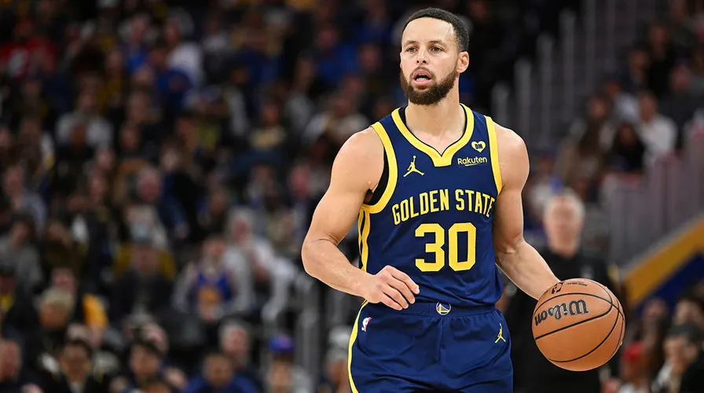

In a small village surrounded by dense woods, a young girl named Emily discovered an ancient map that led to a mysterious forest filled with magical creatures and hidden treasures. Her journey through the forest revealed secrets of her ancestors and unlocked powers she never knew she had.
Listen to Audio Book: Starfleet Diplomacy: A New HopeIn the heart of Silicon Valley, nestled between tech giants and startup incubators, lies a garage that once belonged to a young inventor named Steve Jobs. This was no ordinary garage; it was the birthplace of innovation, where dreams were turned into reality through the power of technology and creativity. The year was 1976, and the invention that would change the world was nothing short of revolutionary - the Apple I computer. Steve Jobs, along with his partner Steve Wozniak, had a vision to bring computing to the masses. They believed that computers should be accessible to everyone, not just large corporations. Their dream was to create a personal computer that was affordable, easy to use, and powerful enough to revolutionize how people worked and played. The Apple I was a marvel of its time. It was a compact, all-in-one machine that could be connected to a television set for display. Despite its simplicity, it packed a punch with its 8-bit processor and 4 kilobytes of RAM. The design was minimalist yet elegant, reflecting the ethos of Apple - "Think Different." However, the journey from concept to product was fraught with challenges. There were doubts about whether such a device could find a market. But Steve Jobs was undeterred. He saw potential where others saw obstacles. With relentless determination, he pushed forward, securing funding and assembling a team of talented engineers. On April 1, 1977, the Apple I went on sale. It was priced at $666.66 (a nod to the hexadecimal value of 1000), a price that seemed steep for what many considered a toy. Yet, within months, orders flooded in, far exceeding expectations. People were captivated by the idea of having a personal computer in their homes. The success of the Apple I paved the way for the Apple II, which introduced color graphics and expanded memory options. These innovations continued to push the boundaries of what was possible in personal computing, setting the stage for future breakthroughs like the Macintosh and the iPhone.Today, the legacy of the Apple I lives on in the spirit of innovation that defines Silicon Valley. It stands as a testament to the power of dreaming big, believing in oneself, and never giving up. From that humble garage in Palo Alto, a new era of personal computing began, changing the world one byte at a time.
Listen to Audio Book: Start of computersIn the bustling city of Konoha, Naruto Uzumaki, the young ninja with the Nine-Tails sealed within him, found himself on a mission that was unlike any he had undertaken before. His destination was the Hidden Leaf Village's new alliance partner, the Waterfall Country, where he was to meet with Tanjiro Kamado, a renowned Demon Slayer known across the world. The purpose of this meeting was to discuss potential threats that could affect both villages and to explore ways they could work together to combat these dangers. As Naruto arrived in the Waterfall Country, he was greeted by a sight that took his breath away. The village was alive with the energy of its inhabitants, who were known for their unique blend of traditional culture and modern technology. Among them stood Tanjiro, his brother Nezuko, and their fellow Demon Slayers, Kyojuro Rengoku and Giyu Tomioka. Despite the differences in their worlds, Naruto felt a strange sense of familiarity with these warriors, drawn perhaps by the shared spirit of those who fight against overwhelming odds. The meeting began with formalities, but quickly shifted towards the heart of the matter. Naruto spoke about the recent increase in mysterious disappearances in Konoha, attributing them to unknown forces. Tanjiro listened intently, his keen eyes scanning Naruto's face for signs of deception. When Naruto finished, Tanjiro leaned forward, his voice filled with determination. "We have faced similar challenges," he said, "and we know what it takes to stand against such darkness." Naruto was taken aback by Tanjiro's words. He had expected a different reaction, perhaps skepticism or even hostility. But instead, he saw a kindred spirit, someone who understood the weight of responsibility that came with being a protector of one's people. From that moment on, Naruto knew that he had made a friend in Tanjiro, a bond forged not just by mutual respect but by a shared understanding of the battles yet to come.As the day turned into night, Naruto and Tanjiro found themselves training together, pushing their limits under the watchful eyes of the other Demon Slayers. Naruto learned techniques from Tanjiro, such as the Breath of Water, which allowed him to control water elements, enhancing his already formidable abilities. Meanwhile, Tanjiro observed Naruto's unique fighting style, impressed by his resilience and adaptability. Their training sessions were intense, but they also shared stories of their past battles, laughter echoing through the training grounds. Naruto told tales of his adventures in the Hidden Leaf, while Tanjiro recounted his journey to become a Demon Slayer, the loss of his family, and his unwavering resolve to protect humanity from demons.By the time the sun rose again, Naruto and Tanjiro had formed a deep bond, their friendship strengthened by their shared experiences and the common goal of protecting their villages. As Naruto prepared to return to Konoha, he carried with him not just memories of his adventure but also a newfound ally in his quest to become Hokage. Back in Konoha, Naruto shared his experiences with his friends, including Sasuke Uchiha and Sakura Haruno. They listened with interest, their own battles against Akatsuki and Orochimaru having honed their understanding of the complexities of their world. Naruto's tale of his encounter with the Demon Slayers inspired them, reminding them of the importance of unity and cooperation in facing the challenges ahead. This crossover between Naruto and the Demon Slayer universe was not just a meeting of minds; it was a testament to the power of friendship and the strength found in standing together against the darkness. As Naruto looked forward to the future, he knew that the lessons he had learned would serve him well, not just as a ninja but as a leader capable of bringing people together in times of need.
Listen to Audio Book: Beneath the Veil: Naruto's Encounter with the Demon WorldIn the heart of Oakland, California, where the Golden State Warriors reign supreme, there stands a legend whose name echoes through the annals of basketball history. His name is Stephen Curry, a man who has transformed the game with his unparalleled shooting prowess and infectious spirit. Born on March 14, 1988, Steph Curry was destined to become more than just another player; he was set to redefine what was possible on the court.From a young age, Steph displayed a natural talent for basketball that was unmatched. Growing up in Charlotte, North Carolina, he honed his skills under the guidance of his father, Dell Curry, a former NBA sharpshooter himself. The younger Curry inherited not just his father's shooting ability but also his love for the game. It was clear early on that Steph had something special, a unique combination of skill, intelligence, and charisma that would captivate audiences worldwide.Curry's journey to stardom wasn't without its challenges. Despite his exceptional talent, he faced skepticism about his size and whether he could succeed in the physically demanding world of professional basketball. However, Steph remained undeterred, using these doubts as fuel to prove everyone wrong. He led Davidson College to the Elite Eight in the NCAA tournament, showcasing his remarkable scoring abilities and leadership. The moment that truly cemented Steph Curry's legacy came in the 2013 NBA Finals against the San Antonio Spurs. With the series tied at three games apiece, Curry scored 26 points in the deciding Game 7, including a clutch three-pointer that sealed the victory for the Warriors. This performance solidified his reputation as one of the greatest shooters in NBA history.Since then, Curry has continued to break records and inspire fans around the globe. His ability to shoot from anywhere on the court, combined with his unorthodox style, has made him a beloved figure in the sport. Off the court, Steph is known for his humility, philanthropy, and commitment to social justice causes, further endearing him to millions. As we look back on Steph Curry's career, it's clear that he has left an indelible mark on the game of basketball. From his humble beginnings in North Carolina to becoming a global icon in the Bay Area, Curry's story is one of determination, innovation, and the relentless pursuit of excellence. His impact extends far beyond the hardwood, inspiring countless young athletes and fans alike to dream big and never give up on their dreams.
 Listen to Audio Book: Download Story: The legend of steph curry greatest 3 pointer in NBA